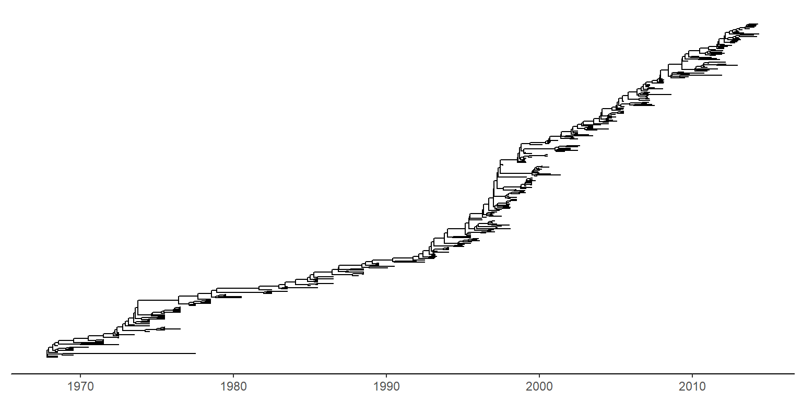
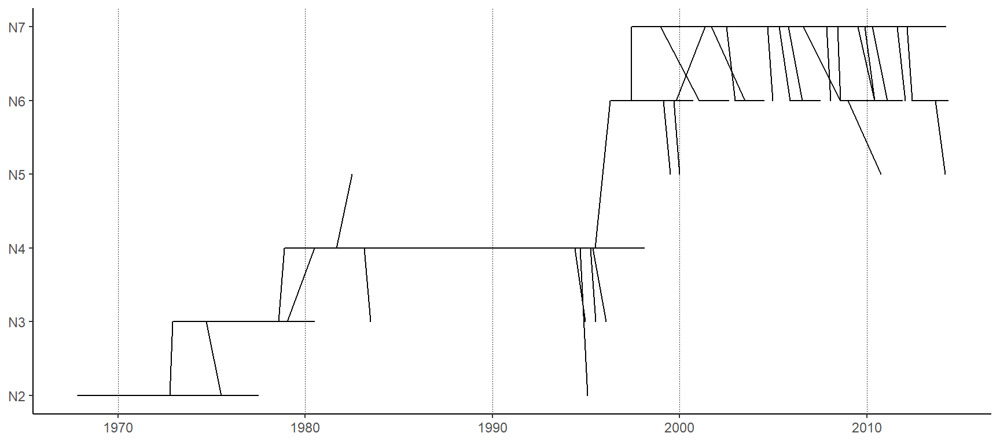
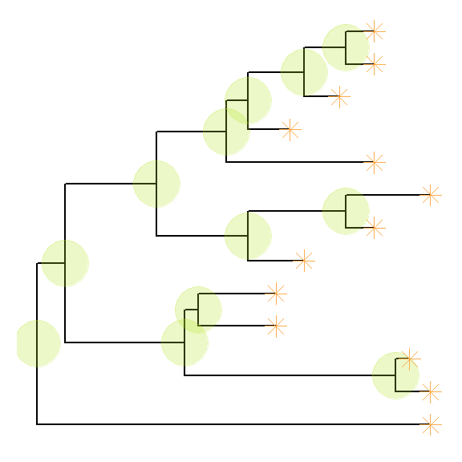
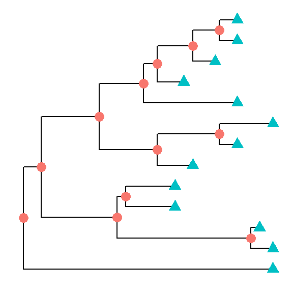
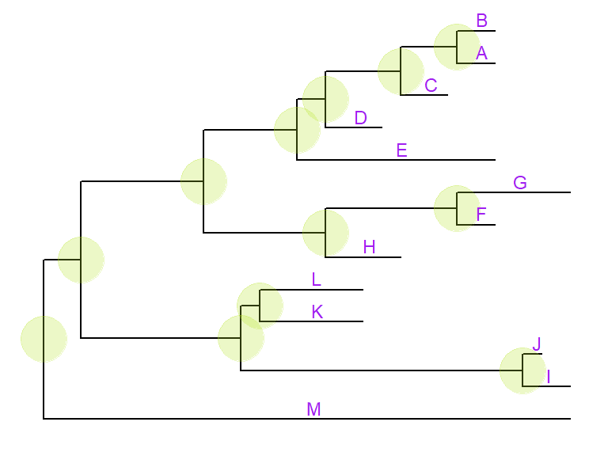
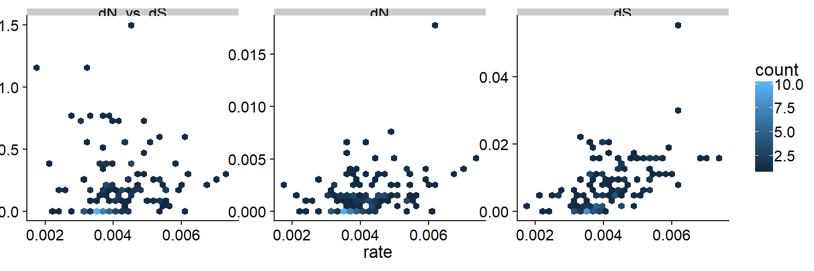
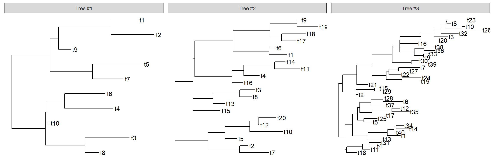
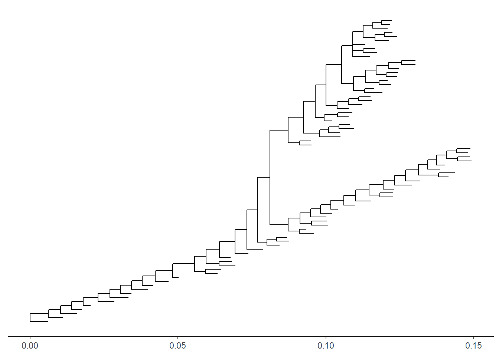

Chapter 4 Phylogenetic Tree Visualization
To view a phylogenetic tree, we first need to parse the tree file into R. The ggtree (Yu et al. 2017) package supports many file formats via the treeio package, including output files of commonly used software packages in evolutionary biology. For more details, plase refer to the treeio vignette.
library("treeio")
library("ggtree")
nwk <- system.file("extdata", "sample.nwk", package="treeio")
tree <- read.tree(nwk)4.1 Viewing a phylogenetic tree with ggtree
The ggtree package extends ggplot2 (Wickham 2009) package to support viewing phylogenetic tree.
It implements geom_tree layer for displaying phylogenetic tree, as shown below:
ggplot(tree, aes(x, y)) + geom_tree() + theme_tree()
The function, ggtree, was implemented as a short cut to visualize a tree, and it works exactly the same as shown above.
ggtree takes all the advantages of ggplot2. For example, we can change the color, size and type of the lines as we do with ggplot2.
ggtree(tree, color="firebrick", size=1, linetype="dotted")
By default, the tree is viewed in ladderize form, user can set the parameter ladderize = FALSE to disable it.
ggtree(tree, ladderize=FALSE)
The branch.length is used to scale the edge, user can set the parameter branch.length = “none” to only view the tree topology (cladogram) or other numerical variable to scale the tree (e.g. dN/dS, see also in Tree Annotation vignette).
ggtree(tree, branch.length="none")
4.2 Layout
Currently, ggtree supports several layouts, including:
- rectangular (by default)
- slanted
- circular
- fan
for phylogram (by default) and cladogram if user explicitly setting branch.length=‘none’. Unrooted (equal angle and daylight methods), time-scaled and 2-dimensional layouts are also supported.
4.2.1 Phylogram and Cladogram
library(ggtree)
set.seed(2017-02-16)
tr <- rtree(50)
ggtree(tr)
ggtree(tr, layout="slanted")
ggtree(tr, layout="circular")
ggtree(tr, layout="fan", open.angle=120)
ggtree(tr, layout="equal_angle")
ggtree(tr, layout="daylight")
ggtree(tr, branch.length='none')
ggtree(tr, branch.length='none', layout='circular')
ggtree(tr, layout="daylight", branch.length='none')
There are also other possible layouts that can be drawn by modifying scales/coordination, for examples, reverse label of time scale, repropotion circular/fan tree, etc..
ggtree(tr) + scale_x_reverse()
ggtree(tr) + coord_flip()
ggtree(tr) + scale_x_reverse() + coord_flip()
print(ggtree(tr), newpage=TRUE, vp=grid::viewport(angle=-30, width=.9, height=.9))
ggtree(tr, layout='slanted') + coord_flip()
ggtree(tr, layout='slanted', branch.length='none') +
coord_flip() + scale_y_reverse() +scale_x_reverse()
ggtree(tr, layout='circular') + xlim(-10, NA)
ggtree(tr) + scale_x_reverse() + coord_polar(theta='y')
ggtree(tr) + scale_x_reverse(limits=c(10, 0)) + coord_polar(theta='y')
4.2.2 Time-scaled tree
A phylogenetic tree can be scaled by time (time-scaled tree) by specifying the parameter, mrsd (most recent sampling date).
tree2d <- read.beast(system.file("extdata", "twoD.tree", package="treeio"))
ggtree(tree2d, mrsd="2014-05-01") + theme_tree2()
4.2.3 Two dimensional tree
ggtree implemented two dimensional tree. It accepts parameter yscale to scale the y-axis based on the selected tree attribute. The attribute should be numerical variable. If it is character/category variable, user should provides a name vector of mapping the variable to numeric by passing it to parameter yscale_mapping.
ggtree(tree2d, mrsd="2014-05-01",
yscale="NGS", yscale_mapping=c(N2=2, N3=3, N4=4, N5=5, N6=6, N7=7)) +
theme_classic() + theme(axis.line.x=element_line(), axis.line.y=element_line()) +
theme(panel.grid.major.x=element_line(color="grey20", linetype="dotted", size=.3),
panel.grid.major.y=element_blank()) +
scale_y_continuous(labels=paste0("N", 2:7))
In this example, the figure demonstrates the quantity of y increase along the trunk. User can highlight the trunk with different line size or color using the functions described in Tree Manipulation vignette.
4.3 Displaying tree scale (evolution distance)
To show tree scale, user can use geom_treescale() layer.
ggtree(tree) + geom_treescale()
geom_treescale() supports the following parameters:
- x and y for tree scale position
- width for the length of the tree scale
- fontsize for the size of the text
- linesize for the size of the line
- offset for relative position of the line and the text
- color for color of the tree scale
ggtree(tree) + geom_treescale(x=0, y=12, width=6, color='red')
ggtree(tree) + geom_treescale(fontsize=8, linesize=2, offset=-1)
We can also use theme_tree2() to display the tree scale by adding x axis.
ggtree(tree) + theme_tree2()
Tree scale is not restricted to evolution distance, ggtree can re-scale the tree with other numerical variable. More details can be found in the Tree Annotation vignette.
4.4 Displaying nodes/tips
Showing all the internal nodes and tips in the tree can be done by adding a layer of points using geom_nodepoint, geom_tippoint or geom_point.
ggtree(tree) + geom_point(aes(shape=isTip, color=isTip), size=3)
p <- ggtree(tree) + geom_nodepoint(color="#b5e521", alpha=1/4, size=10)
p + geom_tippoint(color="#FDAC4F", shape=8, size=3)
4.5 Displaying labels
Users can use geom_text or geom_label to display the node (if available) and tip labels simultaneously or geom_tiplab to only display tip labels:
p + geom_tiplab(size=3, color="purple")
geom_tiplab not only supports using text or label geom to display labels,
it also supports image geom to label tip with image files. A corresponding
geom, geom_nodelab is also provided for displaying node labels. For details of
label nodes with images, please refer to
the vignette,
Annotating phylogenetic tree with images.
For circular and unrooted layout, ggtree supports rotating node labels according to the angles of the branches.
ggtree(tree, layout="circular") + geom_tiplab(aes(angle=angle), color='blue')
To make it more readable for human eye, ggtree provides a geom_tiplab2 for circular layout (see post 1 and 2).
ggtree(tree, layout="circular") + geom_tiplab2(color='blue')
By default, the positions are based on the node positions, we can change them to based on the middle of the branch/edge.
p + geom_tiplab(aes(x=branch), size=3, color="purple", vjust=-0.3)
Based on the middle of branch is very useful when annotating transition from parent node to child node.
4.6 Update tree view with a new tree
In previous example, we have a p object that stored the tree viewing of 13 tips and internal nodes highlighted with specific colored big dots. If users want to apply this pattern (we can imaging a more complex one) to a new tree, you don’t need to build the tree step by step. ggtree provides an operator, %<%, for applying the visualization pattern to a new tree.
For example, the pattern in the p object will be applied to a new tree with 50 tips as shown below:
p %<% rtree(50)
4.7 Theme
theme_tree() defined a totally blank canvas, while theme_tree2() adds
phylogenetic distance (via x-axis). These two themes all accept a parameter of
bgcolor that defined the background color. Users can pass
any theme components to the
theme_tree() function to modify them.
ggtree(rtree(30), color="red") + theme_tree("steelblue")
ggtree(rtree(20), color="white") + theme_tree("black")
4.8 Visualize a list of trees
ggtree supports multiPhylo object and a list of trees can be viewed simultaneously.
trees <- lapply(c(10, 20, 40), rtree)
class(trees) <- "multiPhylo"
ggtree(trees) + facet_wrap(~.id, scale="free") + geom_tiplab()
One hundred bootstrap trees can also be view simultaneously.
btrees <- read.tree(system.file("extdata/RAxML", "RAxML_bootstrap.H3", package="treeio"))
ggtree(btrees) + facet_wrap(~.id, ncol=10)
Another way to view the bootstrap trees is to merge them together to form a density tree. We can add a layer of the best tree on the top of the density tree.
p <- ggtree(btrees, layout="rectangular", color="lightblue", alpha=.3)
best_tree <- read.tree(system.file("extdata/RAxML", "RAxML_bipartitionsBranchLabels.H3", package="treeio"))
df <- fortify(best_tree, branch.length='none')
p+geom_tree(data=df, color='firebrick')
4.9 Rescale tree
Most of the phylogenetic trees are scaled by evolutionary distance (substitution/site). In ggtree, users can re-scale a phylogenetic tree by any numerical variable inferred by evolutionary analysis (e.g. dN/dS).
library("treeio")
beast_file <- system.file("examples/MCC_FluA_H3.tree", package="ggtree")
beast_tree <- read.beast(beast_file)
beast_tree## 'treedata' S4 object that stored information of
## 'C:/Users/YGC/Library/R/library/ggtree/examples/MCC_FluA_H3.tree'.
##
## ...@ phylo:
## Phylogenetic tree with 76 tips and 75 internal nodes.
##
## Tip labels:
## A/Hokkaido/30-1-a/2013, A/New_York/334/2004, A/New_York/463/2005, A/New_York/452/1999, A/New_York/238/2005, A/New_York/523/1998, ...
##
## Rooted; includes branch lengths.
##
## with the following features available:
## 'height', 'height_0.95_HPD', 'height_median',
## 'height_range', 'length', 'length_0.95_HPD',
## 'length_median', 'length_range', 'posterior', 'rate',
## 'rate_0.95_HPD', 'rate_median', 'rate_range'.p1 <- ggtree(beast_tree, mrsd='2013-01-01') + theme_tree2() +
ggtitle("Divergence time")
p2 <- ggtree(beast_tree, branch.length='rate') + theme_tree2() +
ggtitle("Substitution rate")
library(cowplot)
plot_grid(p1, p2, ncol=2)mlcfile <- system.file("extdata/PAML_Codeml", "mlc", package="treeio")
mlc_tree <- read.codeml_mlc(mlcfile)
p1 <- ggtree(mlc_tree) + theme_tree2() +
ggtitle("nucleotide substitutions per codon")
p2 <- ggtree(mlc_tree, branch.length='dN_vs_dS') + theme_tree2() +
ggtitle("dN/dS tree")
plot_grid(p1, p2, ncol=2)
In addition to specify branch.length in tree visualization, users can change branch length stored in tree object by using rescale_tree function.
beast_tree2 <- rescale_tree(beast_tree, branch.length='rate')
ggtree(beast_tree2) + theme_tree2()
4.10 Zoom on a portion of tree
ggtree provides gzoom function that similar to zoom function provided in ape. This function plots simultaneously a whole phylogenetic tree and a portion of it. It aims at exploring very large trees.
library("ape")
data(chiroptera)
library("ggtree")
gzoom(chiroptera, grep("Plecotus", chiroptera$tip.label))
Zoom in selected clade of a tree that was already annotated with ggtree is also supported.
groupInfo <- split(chiroptera$tip.label, gsub("_\\w+", "", chiroptera$tip.label))
chiroptera <- groupOTU(chiroptera, groupInfo)
p <- ggtree(chiroptera, aes(color=group)) + geom_tiplab() + xlim(NA, 23)
gzoom(p, grep("Plecotus", chiroptera$tip.label), xmax_adjust=2)
4.11 Color tree
In ggtree, coloring phylogenetic tree is easy, by using aes(color=VAR) to map the color of tree based on a specific variable (numeric and category are both supported).
ggtree(beast_tree, aes(color=rate)) +
scale_color_continuous(low='darkgreen', high='red') +
theme(legend.position="right")
User can use any feature (if available), including clade posterior and dN/dS etc., to scale the color of the tree.
References
Yu, Guangchuang, David K. Smith, Huachen Zhu, Yi Guan, and Tommy Tsan-Yuk Lam. 2017. “Ggtree: An R Package for Visualization and Annotation of Phylogenetic Trees with Their Covariates and Other Associated Data.” Methods in Ecology and Evolution 8 (1): 28–36. https://doi.org/10.1111/2041-210X.12628.
Wickham, Hadley. 2009. Ggplot2: Elegant Graphics for Data Analysis. 1st ed. Springer.